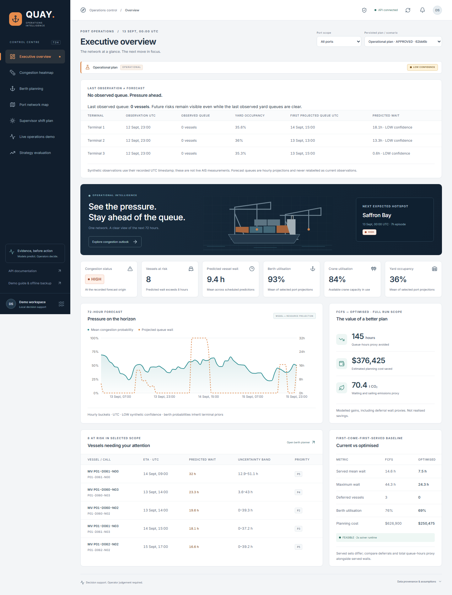
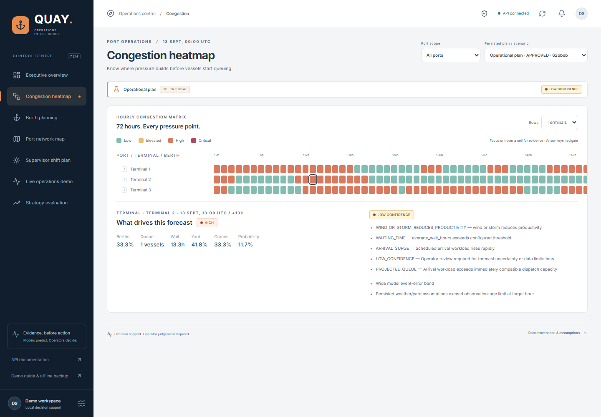
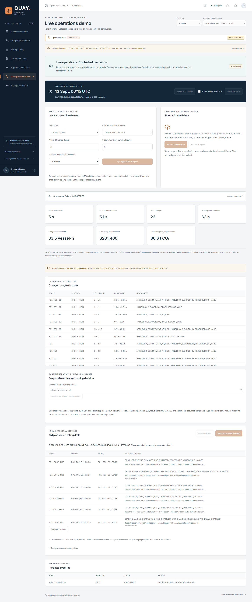
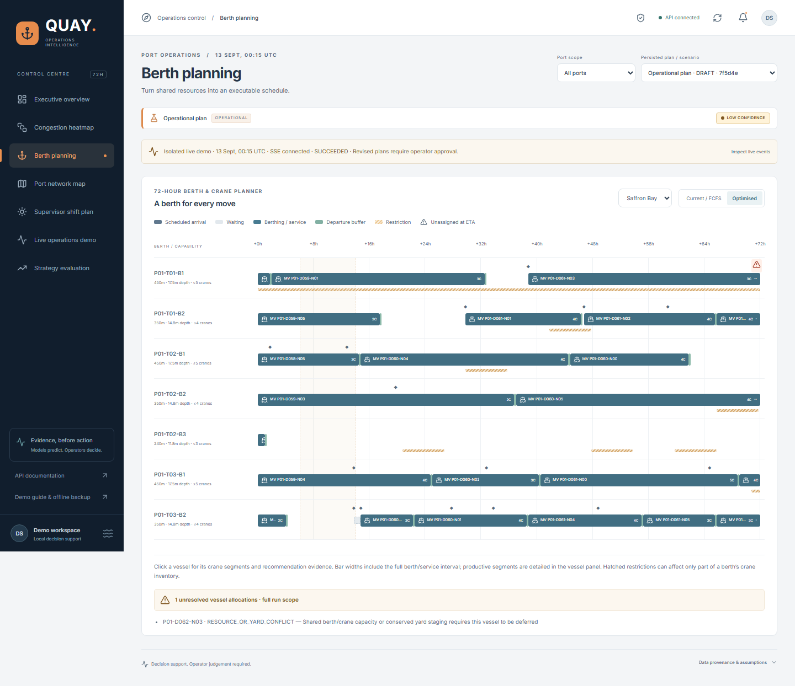
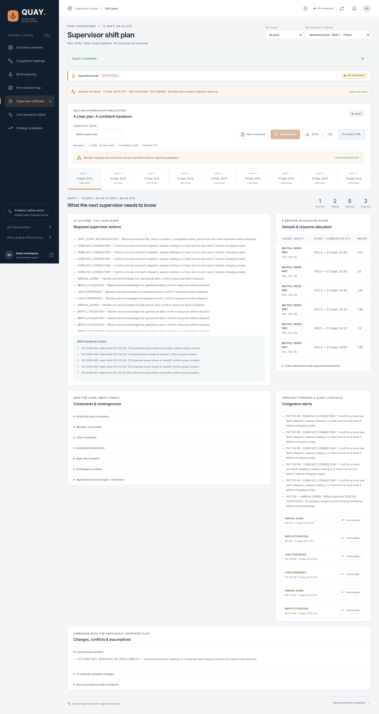
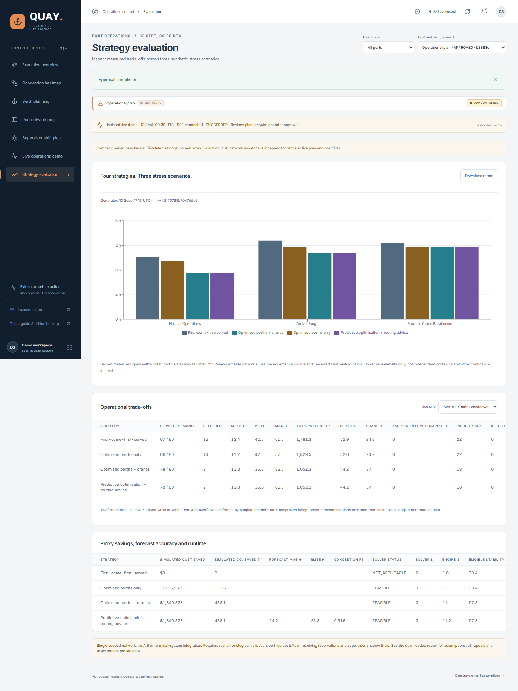

QUAY · OPERATIONS INTELLIGENCE
Evidence before action.
Recorded synthetic demonstration — services may be offline. These are actual screenshots and persisted outputs, not live telemetry or real-world validated savings. Source datasets use seed 42 and fixed UTC clocks. No network requests, external fonts or interactive fake controls.
Thirty-second pitch
Ports discover congestion too late. QUAY forecasts pressure for 72 hours, then allocates compatible berths, cranes and yard capacity using mathematical optimisation. Disruptions create fresh drafts while ongoing work stays fixed. Supervisors receive nine handovers and retain approval authority. Synthetic evaluations show scheduling trade-offs; real AIS and terminal-system validation are next.
Recorded incident: 5.009s forecast; 5.073s engine; 23 plan changes. The receipt says operational_plan_replaced=false, approval_required=true and plan_status=DRAFT. These scoped live values differ from the frozen network benchmark below.
Persisted event and recovery receipts
RECORDED STEP 1
Current operations

RECORDED STEP 2
Hourly early warnings

RECORDED STEP 3
Persisted storm and rolling draft

RECORDED STEP 4
Timed berth/crane allocation

RECORDED RESPONSIBLE ROUTING
KEEP CURRENT PLAN
Vessel P02-D060-N02. Source 4eea620b-83eb-413f-8fd9-bd0b10ae5844; 2026-09-13T00:00:00Z UTC; model ml-v1-2f70795b7047dda6. LOW confidence. Historical, expired and unapproved; no receiving capacity is reserved.
- Delivery time includes sailing, certified handling and the supplied inland route.
- Changes require a compatible receiving slot without displacing existing reservations.
- Select only benefits above policy thresholds; otherwise retain the current plan.
Rejected alternatives: DIVERSION_DISTANCE_EXCEEDS_NEARBY_PORT_LIMIT, INSUFFICIENT_DELIVERY_TIME_SAVING, INSUFFICIENT_END_TO_END_BENEFIT, NO_PHYSICALLY_POSSIBLE_ARRIVAL_ADJUSTMENT, UNCERTAINTY_ERASES_DIVERSION_BENEFIT.
Inspect every option and end-to-end impactRECORDED STEP 5
Nine-shift supervisor plan

RECORDED STEP 6
Measured strategy comparison

All four strategies, all three scenarios
Frozen publication 2026-09-13T17:13:51.949259+00:00; model ml-v1-2f70795b7047dda6. Served averages exclude deferred calls; total-delay accounting retains their 120h lower bounds. Berth starts can occur after 72h. Proxy savings are hypothetical and configurable.
Maximum waits increased. Predictive/routing scheduling had no incremental primary benefit over joint berth/crane scheduling. No reroutes were approved or executed. Surge waiting MAE is 42.03h; confidence remains LOW. No live AIS/TOS integration or real operational validation is claimed.
Full report · All metrics CSV · Dashboard-ready evidence · Printable supervisor plan · Plan JSON · Plan CSV